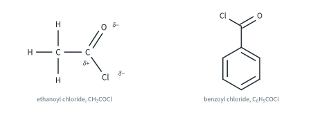
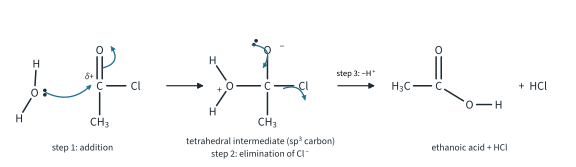
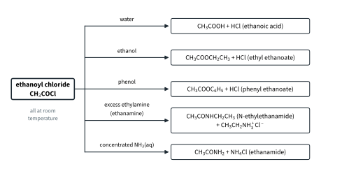
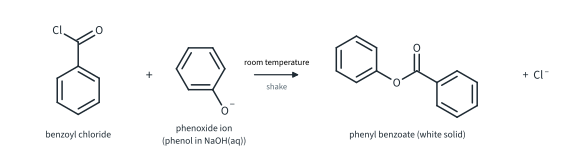
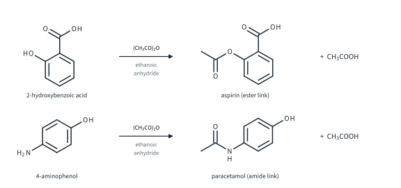
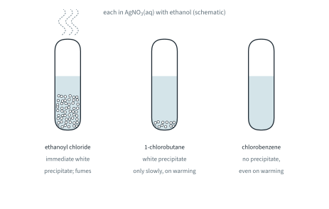
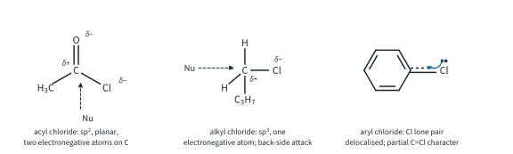
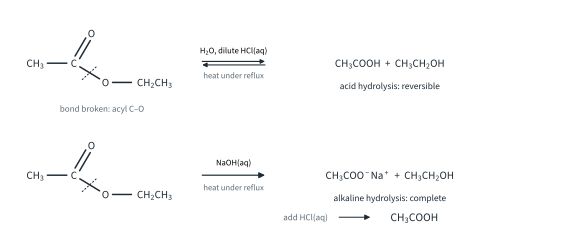
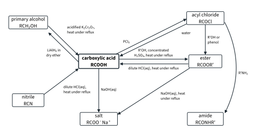

Carboxylic Acids and Derivatives 2
Topic 11.8 · Carboxylic Acids and Derivatives Part 2
On this page
Introduction
Acyl chlorides and esters are derivatives of carboxylic acids: the –OH of the carboxyl group is replaced by –Cl in an acyl chloride, RCOCl, and by –OR′ in an ester, RCOOR′. Both react at the carbonyl carbon, which nucleophiles attack, and in both the –Cl or –OR′ group is the part that is replaced. This Part covers the reactions of acyl chlorides with water, alcohols, phenols and amines, why acyl chlorides are hydrolysed so much more easily than alkyl and aryl chlorides, and how esters are made and hydrolysed. (Topic 11.3's map of the mechanisms pointed here for the addition-elimination of acyl chlorides and esters.)
Acyl chlorides
Structure and naming
Acyl chlorides contain the –COCl group. They are named from the acid, with -oic acid changed to -oyl chloride: CH3COCl is ethanoyl chloride (the 9476 example) and C6H5COCl is benzoyl chloride (Fig 1). Both are colourless liquids that fume in moist air (b.p. 51 °C and 197 °C; literature values).

The carbonyl carbon of an acyl chloride is bonded to two electronegative atoms, O and Cl. Both pull electron density away from it, so it carries a large δ+ charge and is strongly attacked by nucleophiles. It is also sp2 hybridised and planar, so a nucleophile can reach it easily from above or below the plane. That makes acyl chlorides the most reactive of the carboxylic acid derivatives in 9476.
Hydrolysis with water
Ethanoyl chloride reacts vigorously with cold water, at room temperature. The reaction is exothermic, and steamy white fumes of hydrogen chloride are given off:1
CH3COCl + H2O → CH3COOH + HCl(g) (water, room temperature)
If the water contains silver nitrate, a white precipitate of silver chloride forms at once, because the Cl− ions are released immediately:
Ag+(aq) + Cl−(aq) → AgCl(s)
This is why acyl chlorides are stored in tightly sealed bottles and handled in a fume cupboard, and why the apparatus for making them (Part 1) must be dry.
Benzoyl chloride (Further example). Benzoyl chloride is hydrolysed much more slowly by cold water: C6H5COCl + H2O → C6H5COOH + HCl. The π electrons of the benzene ring are delocalised into the C=O group, which reduces the δ+ charge on the carbonyl carbon, so it attracts water less strongly. A white solid, benzoic acid, slowly forms.

Condensation reactions of acyl chlorides
With a compound H–Nu that has a lone pair (an alcohol, a phenol, ammonia or an amine), an acyl chloride gives RCO–Nu and HCl. Two molecules join and lose a small molecule, HCl, so these are condensation reactions. All of them happen at room temperature (Fig 3).

With alcohols
Ethanoyl chloride reacts with ethanol at room temperature to give ethyl ethanoate, with steamy fumes of HCl:
CH3COCl + CH3CH2OH → CH3COOCH2CH3 + HCl(g) (room temperature)
Compare this with making the same ester from ethanoic acid (Part 1): the acyl chloride reaction needs no catalyst and no heating, it is fast, and it goes to completion. The acyl chloride is far more reactive than the acid, and the reverse reaction is not favourable: Cl− cannot displace the –OR′ group of the ester, and the HCl leaves as a gas, HCl(g).
With phenols
Phenol is not esterified by carboxylic acids (Part 1), but acyl chlorides are reactive enough. Ethanoyl chloride gives phenyl ethanoate:
CH3COCl + C6H5OH → CH3COOC6H5 + HCl(g) (room temperature)
The ester named in 9476 is phenyl benzoate, from benzoyl chloride and phenol: C6H5COCl + C6H5OH → C6H5COOC6H5 + HCl(g). In practice, the phenol is first dissolved in NaOH(aq), which turns it into the phenoxide ion. The phenoxide ion is a much better nucleophile than phenol, because its negative charge makes the O atom more electron-rich (Topic 11.6 Part 2). Benzoyl chloride is then shaken with the solution at room temperature, and phenyl benzoate separates as a white solid:2
C6H5OH + NaOH → C6H5ONa + H2O
C6H5COCl + C6H5ONa → C6H5COOC6H5 + NaCl (benzoyl chloride with phenol in NaOH(aq), room temperature)

Why do phenols need the acyl chloride? The lone pair on the O atom of phenol is partly delocalised into the benzene ring, so it is less available to attack a carbonyl carbon: phenol is a weaker nucleophile than an alcohol. The carbonyl carbon of a carboxylic acid is not δ+ enough for the reaction to be worth having; that of an acyl chloride is.
With primary amines and ammonia
Amines have a lone pair on nitrogen and are better nucleophiles than alcohols, so they react vigorously with acyl chlorides at room temperature. Ethylamine (ethanamine) gives N-ethylethanamide. Ethylamine is a gas at room temperature (b.p. 17 °C; literature value), so it is used as an aqueous or ethanolic solution:
CH3COCl + CH3CH2NH2 → CH3CONHCH2CH3 + HCl
But the amine is also a base (Topic 11.9), so a second molecule of it reacts with the HCl as it forms. With excess amine the overall equation is:
CH3COCl + 2CH3CH2NH2 → CH3CONHCH2CH3 + CH3CH2NH3+Cl−
The salt is ethylammonium chloride. Ammonia reacts in the same way, with concentrated NH3(aq), giving a white solid mixture of ethanamide and ammonium chloride:
CH3COCl + 2NH3 → CH3CONH2 + NH4Cl
The products contain the amide group, –CONH–. Amides themselves (their neutrality, hydrolysis and reduction) are in Topic 11.9 Part 2, and the same amide link joins amino acids in proteins (Topic 11.9 Part 2 and Topic 11.10).3
Worked example 5: predicting the products
Give the organic product of the reaction of ethanoyl chloride with (a) water, (b) methanol, (c) phenol, (d) excess ethylamine, (e) concentrated ammonia. Then give the product of benzoyl chloride with ethanol.
(In every case, the –Cl is replaced by the group left when the reagent loses one H: –OH, –OCH3, –OC6H5, –NHCH2CH3, –NH2. The H and Cl become HCl, or the salt if a base is present.)
| Reagent | Organic product | Other product |
|---|---|---|
| (a) water | ethanoic acid, CH3COOH | HCl |
| (b) methanol | methyl ethanoate, CH3COOCH3 | HCl |
| (c) phenol | phenyl ethanoate, CH3COOC6H5 | HCl |
| (d) excess ethylamine | N-ethylethanamide, CH3CONHCH2CH3 | CH3CH2NH3+Cl− |
| (e) concentrated NH3 | ethanamide, CH3CONH2 | NH4Cl |
| benzoyl chloride + ethanol | ethyl benzoate, C6H5COOCH2CH3 | HCl |

Relative ease of hydrolysis
Acyl chlorides, alkyl chlorides (chloroalkanes) and aryl chlorides all contain a C–Cl bond, but they differ enormously in how easily water breaks it. Add a few drops of each to aqueous silver nitrate (with a little ethanol to dissolve the organic liquid) at room temperature, then warm the tubes in a water bath. Any chloride ions released give a white precipitate of AgCl (Fig 6). (Ethanoyl chloride releases Cl− partly by reacting with the ethanol as well as with the water; either way the HCl appears at once.) 1-Chlorobutane is used rather than chloroethane, which is a gas at room temperature (b.p. 12 °C; literature value). Topic 11.5 uses the same test to compare halogenoalkanes and halogenoarenes.

| Compound | Type | At room temperature | On warming |
|---|---|---|---|
| ethanoyl chloride, CH3COCl | acyl chloride | immediate white precipitate of AgCl; steamy fumes; the tube gets warm | (already complete) |
| 1-chlorobutane, CH3CH2CH2CH2Cl | alkyl chloride | no visible change | white precipitate forms slowly |
| chlorobenzene, C6H5Cl | aryl chloride | no visible change | no precipitate, even on prolonged heating |
So the ease of hydrolysis is acyl chloride > alkyl chloride > aryl chloride. Chlorobenzene is not even hydrolysed by boiling NaOH(aq), which hydrolyses 1-chlorobutane (NaOH(aq), heat: CH3CH2CH2CH2Cl + NaOH → CH3CH2CH2CH2OH + NaCl).4 The reasons lie in the carbon atom that carries the Cl (Fig 7):

- Acyl chloride. The carbonyl carbon is bonded to two electronegative atoms, O and Cl, so it is strongly δ+ and attracts the lone pair of a water molecule strongly. It is sp2 and planar, so the water molecule can approach freely from above or below the plane, and the π electrons of C=O can move onto the oxygen to make room for the new bond (addition first; the Cl leaves afterwards). The activation energy is low, so the reaction is fast even with cold water.
- Alkyl chloride. The carbon is sp3 and bonded to only one electronegative atom, so it is less δ+. There is no π bond to accept the incoming electrons, so the C–Cl bond (340 kJ mol−1, Data Booklet) has to break as the new bond forms, and the nucleophile must approach from the side opposite the Cl (SN2; Topic 11.3 and Topic 11.5). The reaction is slow with water and needs heating, or the stronger nucleophile OH−.
- Aryl chloride. A lone pair on the Cl atom overlaps with the delocalised π system of the ring, so the C–Cl bond has partial double-bond character: it is stronger and shorter (about 0.174 nm, against about 0.178 nm in chloroethane; literature values) and less polar than in an alkyl chloride. The ring blocks approach from the side opposite the Cl, and its π electron cloud repels an approaching nucleophile (Topic 11.3). Under ordinary conditions it is not hydrolysed at all.
Esters
Making esters
9476 names two esters: ethyl ethanoate and phenyl benzoate. There are two ways of making an ester, and you have now met both:
| From a carboxylic acid (Part 1) | From an acyl chloride | |
|---|---|---|
| Reagent and conditions | alcohol, concentrated H2SO4 as catalyst, heat under reflux | alcohol or phenol, room temperature |
| Extent and by-product | reversible (Kc about 4 for ethyl ethanoate; Topic 9 Part 1); H2O | goes to completion; HCl (fumes) |
| Works with phenols? | no | yes (phenyl benzoate: phenol in NaOH(aq)) |
Hydrolysis by aqueous acid
Heating an ester under reflux with dilute acid splits it back into the carboxylic acid and the alcohol:
CH3COOCH2CH3 + H2O ⇌ CH3COOH + CH3CH2OH (dilute HCl(aq), heat under reflux)
This is the reverse of esterification, and it reaches the same kind of equilibrium (Topic 9 Part 1); the H+ ions are a catalyst. Using a large excess of water pushes the position of equilibrium to the right, but acid hydrolysis is reversible and never goes to completion. (Dilute H2SO4(aq) does the same job.)
Hydrolysis by aqueous alkali
Heating an ester under reflux with aqueous sodium hydroxide gives the salt of the acid and the alcohol:
CH3COOCH2CH3 + NaOH → CH3COONa + CH3CH2OH (NaOH(aq), heat under reflux)
Alkaline hydrolysis goes to completion. The carboxylate ion that forms has its negative charge delocalised over its two O atoms (Part 1), and it does not react with the alcohol, so the reverse reaction cannot happen. The NaOH is used up in the reaction (one mole per mole of ester): it is a reactant, not a catalyst. The oily layer of ester disappears as the reaction goes on. To get the free carboxylic acid, acidify the cooled mixture with dilute HCl(aq):
CH3COONa + HCl → CH3COOH + NaCl

Phenyl benzoate is hydrolysed by NaOH(aq) in the same way, but it needs two moles of NaOH per mole of ester, because the phenol released is itself an acid and is neutralised too (Topic 11.6 Part 2):
C6H5COOC6H5 + 2NaOH → C6H5COONa + C6H5ONa + H2O (NaOH(aq), heat under reflux)
Acidifying the cooled mixture gives a white precipitate of benzoic acid (it is only sparingly soluble in cold water; Part 1), and phenol: C6H5COONa + HCl → C6H5COOH + NaCl, and C6H5ONa + HCl → C6H5OH + NaCl.5
Worked example 6 (Further example): how much alkali?
Calculate the volume of 2.00 mol dm−3 NaOH(aq) needed to hydrolyse 3.96 g of phenyl benzoate completely (Mr 198.0).
(Watch the ratio. One ester link uses one NaOH, but the phenol it releases uses another.)
n(phenyl benzoate) = 3.96 / 198.0 = 0.0200 mol
n(NaOH) = 2 × 0.0200 = 0.0400 mol
volume = (0.0400 / 2.00) × 1000 = 20.0 cm3
For 0.0200 mol of ethyl ethanoate, only 10.0 cm3 would be needed, because ethanol does not react with NaOH.
Worked example 7: identifying an ester
An ester X, C4H8O2, is heated under reflux with NaOH(aq). Acidifying the mixture gives a carboxylic acid Y. The other product, Z, is oxidised by acidified K2Cr2O7, heat under reflux, to Y as well. Identify X, Y and Z.
(Hydrolysis splits the ester into an acid and an alcohol. If oxidising the alcohol gives the same acid, the two halves must have the same carbon skeleton.)
C4H8O2 has four carbon atoms, so each half has two: Y is ethanoic acid, CH3COOH, Z is ethanol, CH3CH2OH, and X is ethyl ethanoate, CH3COOCH2CH3. (Its isomer methyl propanoate, CH3CH2COOCH3, would give propanoic acid and methanol, and methanol is oxidised to methanoic acid, not propanoic acid.)
Summary

| Reaction | Reagent and conditions | Equation | Observation |
|---|---|---|---|
| Hydrolysis of an acyl chloride | water, room temperature | CH3COCl + H2O → CH3COOH + HCl(g) | steamy white fumes; white precipitate with AgNO3(aq) |
| Acyl chloride + alcohol | ethanol, room temperature | CH3COCl + CH3CH2OH → CH3COOCH2CH3 + HCl(g) | steamy fumes |
| Acyl chloride + phenol | benzoyl chloride with phenol in NaOH(aq), room temperature | C6H5COCl + C6H5ONa → C6H5COOC6H5 + NaCl | white solid |
| Acyl chloride + primary amine | ethylamine (excess), room temperature | CH3COCl + 2CH3CH2NH2 → CH3CONHCH2CH3 + CH3CH2NH3+Cl− | vigorous |
| Acid hydrolysis of an ester | dilute HCl(aq), heat under reflux | CH3COOCH2CH3 + H2O ⇌ CH3COOH + CH3CH2OH | reversible |
| Alkaline hydrolysis of an ester | NaOH(aq), heat under reflux | CH3COOCH2CH3 + NaOH → CH3COONa + CH3CH2OH | complete; oily layer disappears |
- Ease of hydrolysis: acyl chloride > alkyl chloride > aryl chloride.
- Esters from acids are formed reversibly (heat under reflux, concentrated H2SO4); from acyl chlorides completely (room temperature). Phenols need the acyl chloride.
- Acid hydrolysis of esters is reversible; alkaline hydrolysis goes to completion and gives the salt of the acid.
Additional information
- HCl is released as a gas and fumes in moist air. ↩
- Beyond the syllabus: shaking an acyl chloride with a phenol or an amine in aqueous alkali is called the Schotten–Baumann method. The alkali also takes up the HCl as it forms. ↩
- Secondary amines react in the same way, giving N,N-disubstituted amides: (CH3)2NH + CH3COCl → CH3CON(CH3)2 + HCl (beyond the 9476 outcome, which names primary amines). ↩
- 1-Chlorobutane is hydrolysed very slowly by the water in the tube at room temperature; warming speeds it up enough for the precipitate to appear. With the bromo- and iodoalkanes the precipitate appears sooner, because their C–X bonds are weaker (Topic 11.5). ↩
- Acid hydrolysis of phenyl benzoate, C6H5COOC6H5 + H2O ⇌ C6H5COOH + C6H5OH, is slow and reversible, so alkaline hydrolysis is used. ↩